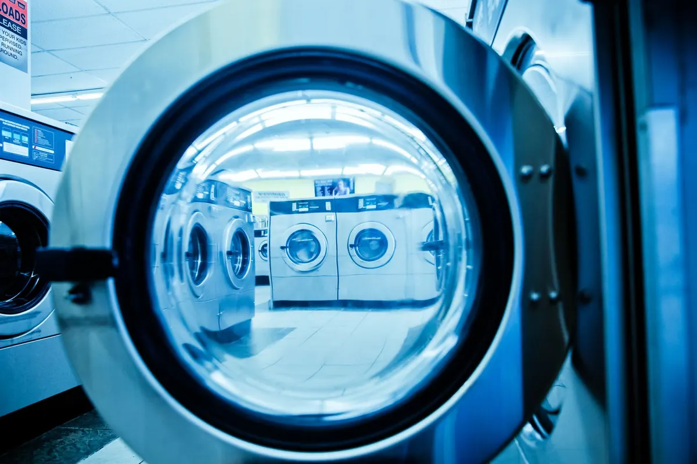
01
Autoservicio
Tú decides el ritmo. Lavadoras y secadoras listas para usar, sin cita y sin esperas eternas.
Lavandería de autoservicio · Eibar & Ermua
Dos lavanderías cuidadas al detalle en el corazón de Eibar y Ermua. Máquinas de gran capacidad, secado rápido y un local pensado para que la colada deje de ser un problema.
Bienvenido a Garbitegia Ivan
Garbitegia Ivan nació con una idea sencilla: que lavar la ropa no te robe el día. Por eso reunimos en un mismo espacio máquinas profesionales de gran capacidad, secadoras rápidas y un local luminoso, limpio y accesible.
Ven cuando te venga bien —abrimos todos los días de 8:00 a 22:00—, elige tu programa y deja que las máquinas hagan el resto. Si tienes dudas, llámanos o escríbenos por WhatsApp: te ayudamos encantados.
EibarErmua
Servicios
Desde la ropa del día a día hasta esa colcha que no cabe en casa. Sin cita previa y, en torno a una hora, lista.

Tú decides el ritmo. Lavadoras y secadoras listas para usar, sin cita y sin esperas eternas.
Cargas de 10, 12 y 16 kg para la colada de toda la semana —o de toda la familia— en una sola tanda.
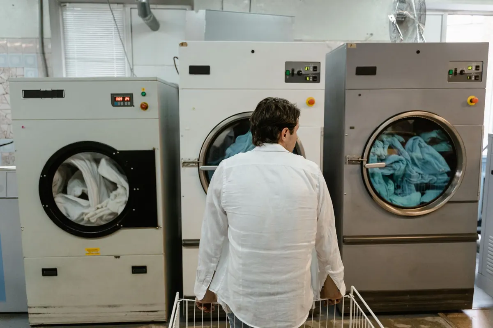
Secadoras eficientes que devuelven la ropa lista para guardar. Adiós al tendedero en casa.
Edredones, mantas, cortinas y ropa de cama. Lo que no cabe en casa, aquí cabe.
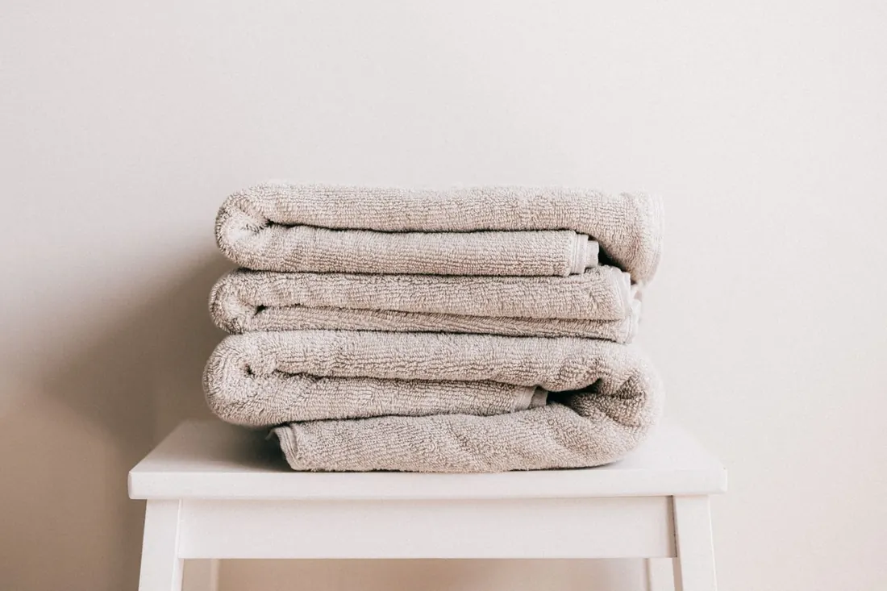
Prendas que piden un trato especial. Consúltanos en tu sede y te orientamos sobre el mejor programa.
El lavado incluye detergente y suavizante. Si prefieres tu marca favorita, tráela sin problema.
Ver preguntas frecuentesGuía rápida
Elige lo que traes y te decimos qué lavadora usar. Sin adivinar y sin dar vueltas con la colada en brazos.
Capacidades orientativas. Si tienes dudas, llámanos al 672 74 17 00.
Para esta colada
Edredón de matrimonio, nórdico o manta grande. Una sola tanda, sin apretar.
Programa para voluminosos y secado a temperatura media.
Cada sede cuenta con acceso adaptado para sillas de ruedas. ¿Alguna necesidad concreta? Llámanos antes de venir.
El ritual
No necesitas reservar ni traer nada especial. Solo tu colada y, si quieres, tu detergente favorito.
Clasifica por color y tejido. Cada máquina indica su capacidad y sus programas.
Selecciona el programa y paga directamente en la máquina. Así de simple.
Añade el tiempo que necesites y deja que el tambor haga el trabajo.
Recoge tu colada limpia y seca, lista para guardar. Hasta la próxima.
Agua caliente, movimiento y paciencia. El resto es química.
Sin cita previa. Ven cuando te venga bien: abrimos de 8:00 a 22:00, todos los días.
Sedes
En Eibar y en Ermua, con el mismo horario, el mismo teléfono y la misma idea de lo que debe ser una buena lavandería.
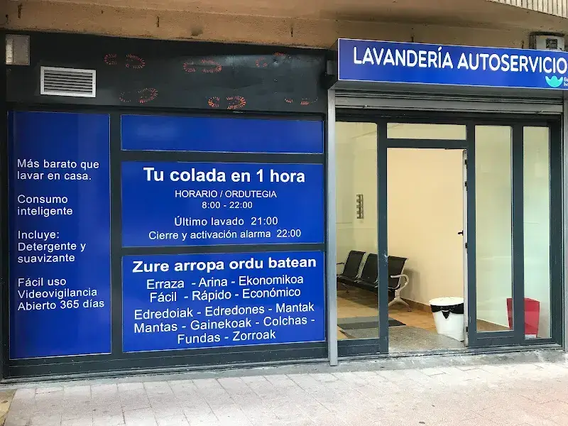
Gipuzkoa
Junto al paseo de Urkizu, a un paso del centro de Eibar. Fácil de encontrar y con todo lo necesario para resolver la colada.
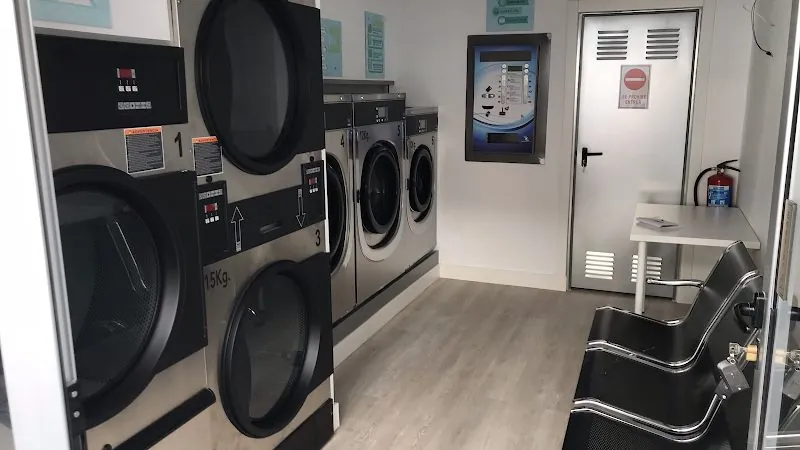
Bizkaia
En pleno centro de Ermua, a un paso de la plaza y de la calle Jesús Guridi. Fácil de encontrar y con todo lo necesario para resolver la colada.
Horario único en ambas sedes: todos los días, de 8:00 a 22:00 (último lavado a las 21:00), festivos incluidos. Puedes llamarnos al 672 74 17 00 para cualquier consulta.
El local
Fotos reales de nuestras dos sedes: las máquinas, la zona de espera y los carteles que encontrarás al entrar.
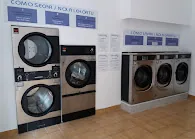
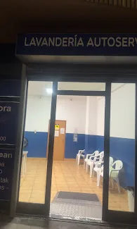
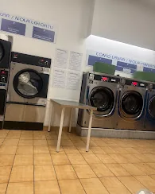
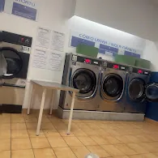
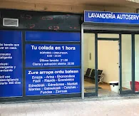
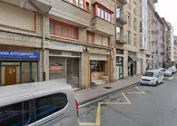
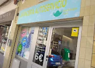
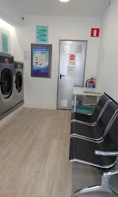
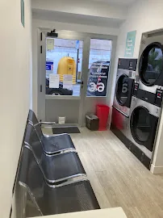
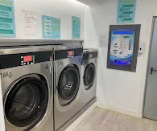
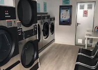
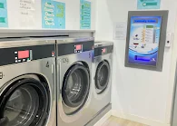
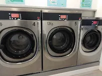
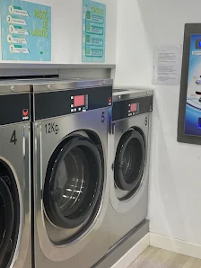
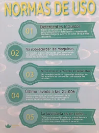
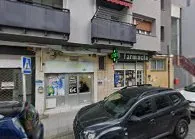
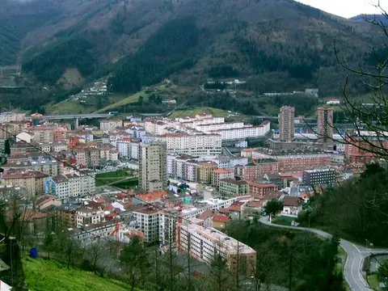
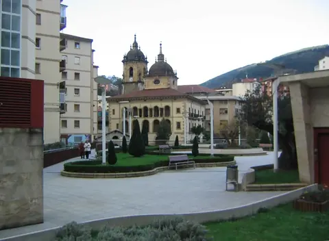
Fotografías de nuestras sedes. La mejor forma de conocerlas es pasarse: te esperamos en Eibar y Ermua.
Opiniones
Lavandería de confianza, rápida y cómoda. Tiene lavadoras grandes, secadoras potentes y todo muy limpio.
Todo muy limpio y las instrucciones de uso, muy bien explicadas. Se agradece encontrar un sitio así.
Me encanta. Buenas máquinas e Iván un crack. Siempre dispuesto a echar una mano si tienes dudas.
Preguntas frecuentes
Y si te queda cualquier otra duda, llámanos: contestamos encantados.
672 74 17 00No. Es autoservicio puro: acude cuando te venga bien y usa la máquina que esté libre. Abrimos todos los días de 8:00 a 22:00, festivos incluidos, y el último lavado empieza a las 21:00.
Sí. Es uno de los motivos por los que más nos visitan. Contamos con lavadoras de hasta 16 kg y secadoras de gran capacidad, pensadas para prendas voluminosas que no caben en una lavadora doméstica.
Los programas incluyen detergente y suavizante. Si tienes una marca o un producto de confianza, puedes traerlo sin problema. Si dudas sobre cantidades o programas, pregúntanos en tienda y te ayudamos.
El pago se realiza directamente en la máquina, de forma sencilla. Si es tu primera vez, pide ayuda al responsable y te explicamos el proceso en un minuto.
Sí. Tanto Eibar como Ermua cuentan con acceso adaptado para sillas de ruedas, y el espacio interior permite moverse con comodidad, también con carrito de bebé.
Un lavado estándar ronda la hora, como indica el cartel de la tienda. El secado depende del programa y del tipo de ropa; puedes ajustar el tiempo en la propia secadora.
Tu próxima colada, resuelta